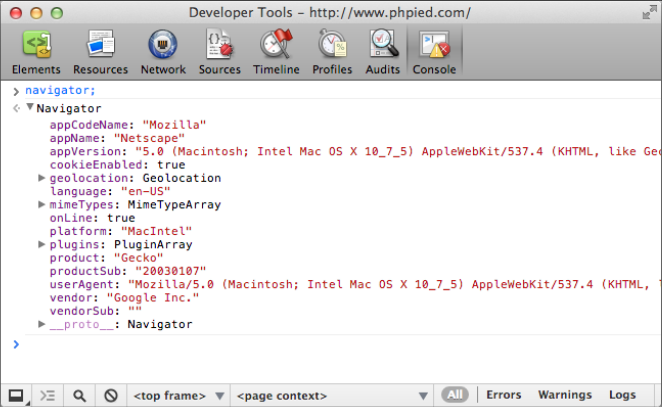
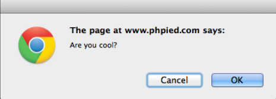
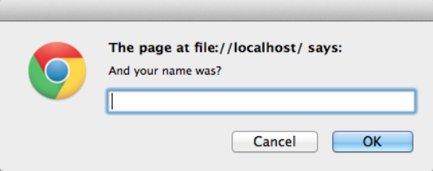

window.document is a BOM object that refers to the currently loaded document (page).
详见 DOM相关文章。
window.navigator
navigator 对象包含浏览器信息，有点像浏览器的“关于”
在console中直接查看navigator对象的内容：

window.navigator.userAgent
1
2
3
> window.navigator.userAgent;
"Mozilla/5.0 (Macintosh; Intel Mac OS X 10_8_3) AppleWebKit/536.28.10 (KHTML, like
Gecko) Version/6.0.3 Safari/536.28.10"
1
2
3
4
5
if(navigator.userAgent.indexOf('MSIE')!==-1){// this is IE}else{// not IE}
>frames.length1// To get access to the iframe's window，如下任一一种方法：window.frames[0];window.frames[0].window;window.frames[0].window.frames;frames[0].window;frames[0];// Using a property called top, you can access the top-most page>window.frames[0].window.top===window;true>window.frames[0].window.top===window.top;true// self is the same as window >self===window;true>frames[0].self==frames[0].window;true// If a frame has a name attribute, you can not only access the frame by name>window.frames['myframe']===window.frames[0];true>frames.myframe===window.frames[0];true
// the difference (ratio) between physical pixels and device pixels in the// retina displays in mobile devices (for example, value 2 in iPhone).>window.devicePixelRatio;1
open() , close()
打开/关闭浏览器窗口。
1
2
3
4
5
varwin=window.open('http://www.packtpub.com','packt','width=300,height=300,resizable=yes');win.close();// closes the new window.
moveTo() , resizeTo()
window.moveTo(100, 100) moves the browser window to screen location x = 100 and y = 100
window.moveBy(10, -10) moves the window 10 pixels to the right and 10 pixels up from its current location
window.resizeTo(x, y) and window.resizeBy(x, y) accept the same parameters as the move methods but they resize the window as opposed to moving it
alert(), prompt(), confirm()
alert() is not an ECMAScript function, but a BOM method. 另外两个方法在 ECMAScript 中。
confirm() gives the user two options, OK and Cancel
prompt() collects textual input
confirm()
1
2
3
4
5
if(confirm('Are you cool?')){// cool}else{// no cool}

Nothing gets written to the console until you close this message, this means that any JavaScript code execution freezes, waiting for the user’s answer
Clicking on OK returns true, clicking on Cancel or closing the message using the X icon (or the ESC key) returns false
prompt()
1
2
>varanswer=prompt('And your name was?');>answer;

The value of answer is one of the following:
null if you click on Cancel or the X icon, or press ESC
”” (empty string) if you click on OK or press Enter without typing anything
A text string if you type something and then click on OK (or press Enter)
setTimeout(), setInterval()
setTimeout() and setInterval() allow for scheduling the execution of a piece of code.
setTimeout() attempts to execute the given code once after a specified number of milliseconds.
setInterval() attempts to execute it repeatedly after a specified number of milliseconds has passed.
1
2
3
4
5
6
7
// shows an alert after approximately 2 seconds (2000 milliseconds):>functionboo(){alert('Boo!');}>setTimeout(boo,2000);4// 返回值是，计划执行的ID，可以用这个ID，通过 clearTimeout() 来 cancel timeout。>varid=setTimeout(boo,2000);>clearTimeout(id);
if(typeofwindow.addEventListener==='function'){// feature is supported, let's use it}else{// hmm, this feature is not supported, will have to// think of another way}